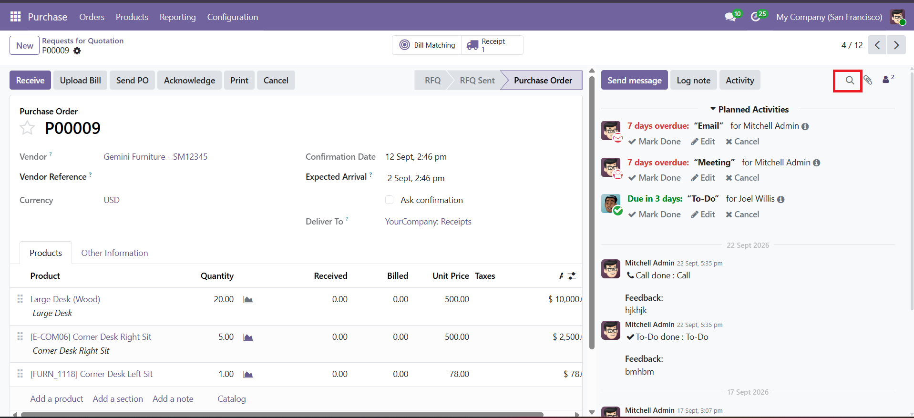
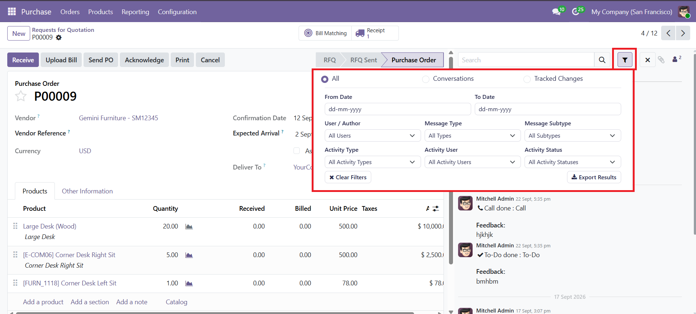
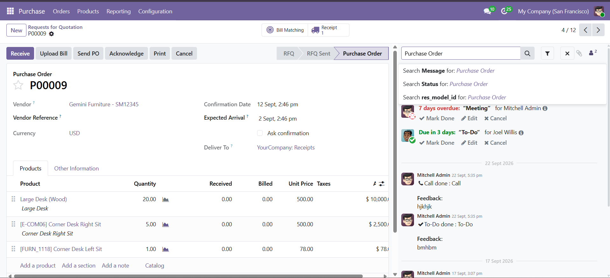
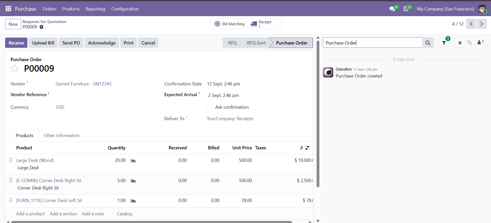
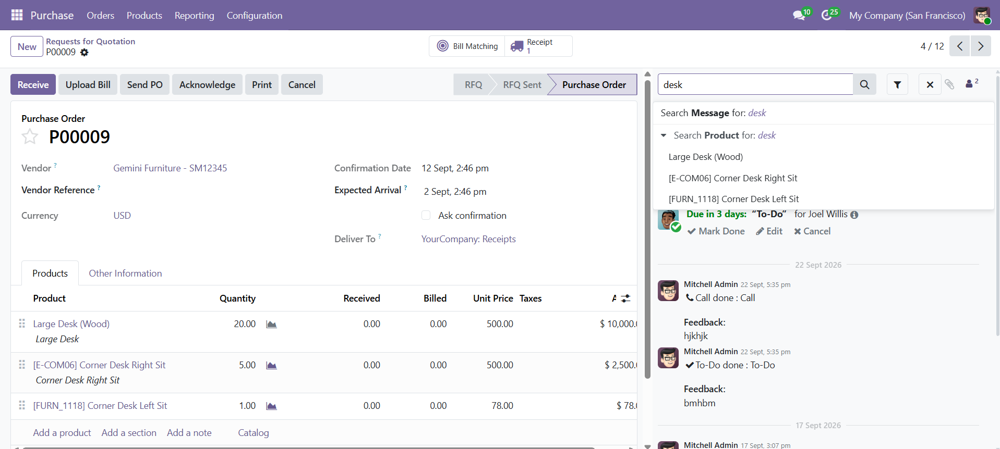
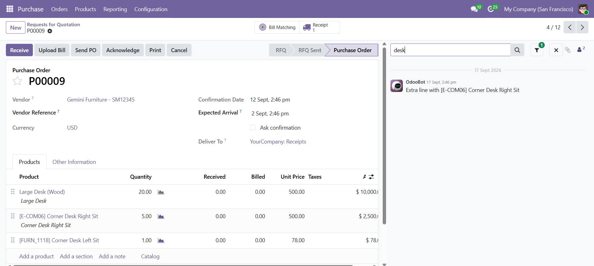
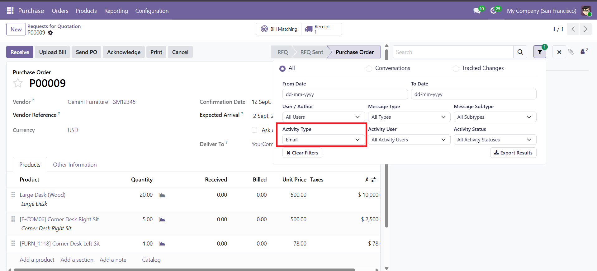
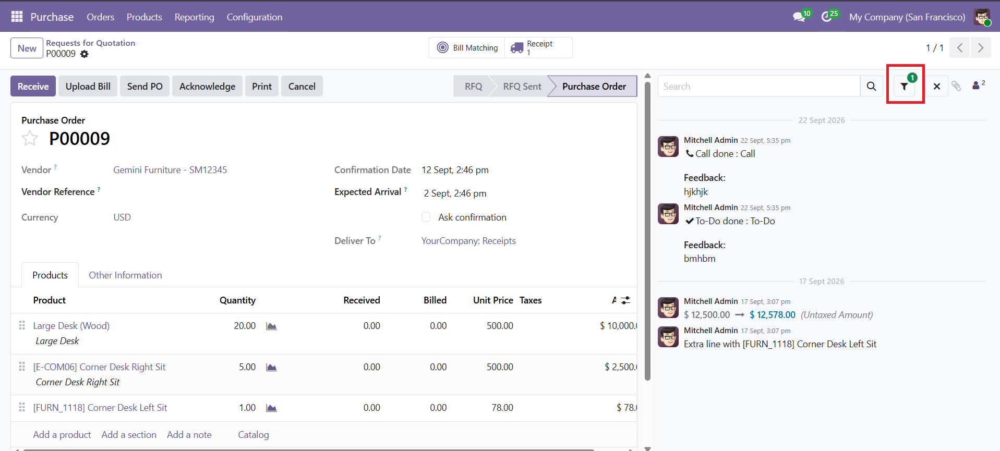
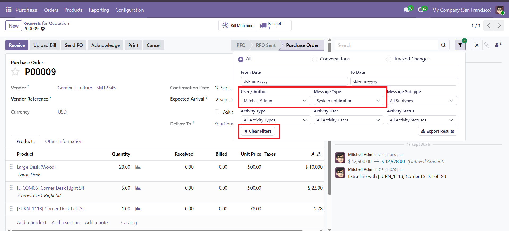
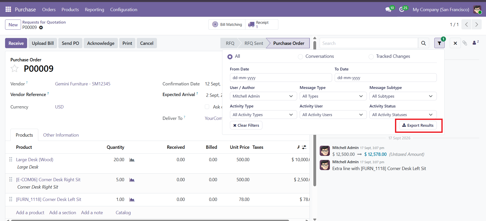

Technical Help, Queries & Support
For any assistance related to this module, customization or Odoo development.
Advanced Chatter enhances the standard Odoo 19 Chatter with advanced search, dynamic suggestions, filtering, result handling, and export functionality.
Search chatter messages using keywords and access advanced filtering options.
Display message, field, field-value, and expandable suggestions while searching.
Filter chatter results using date, user, message, and activity criteria.
Display the number of currently applied filters on the filter button.
Clear the currently applied advanced filter values.
Export the filtered chatter results into CSV format.
Advanced Chatter provides an enhanced search experience directly inside the Odoo 19 Chatter. Users can enter a keyword in the search bar and use the custom Filter option to access advanced filtering controls.
How to Access: Open Chatter → Use the Search Bar → Click the Filter Icon → Open Advanced Filters

Click the Filter icon in the Chatter toolbar to open the custom Advanced Filters dropdown.

The Advanced Filters dropdown provides the available controls for refining chatter messages and activities according to the required criteria.
Advanced Chatter provides dynamic suggestions while the user enters a search keyword. Suggestions can be used to search messages or select available fields and values.
The entered keyword can be searched directly in the chatter messages.
Matching fields can be displayed as suggestions for a more specific search.
Available values for a selected field can be displayed and selected for filtering.
Suggestion groups can be expanded when multiple values are available.
Enter a keyword in the Chatter search bar to display message suggestions. Selecting the message search suggestion displays the matching chatter message.


When a matching field is available, Advanced Chatter displays the field as a suggestion. The field can then be expanded to view its available values.


The Advanced Filters panel allows users to refine chatter messages and activities by selecting specific filter criteria. The available values are provided dynamically in the dropdown, and the selected criteria are applied to display the matching chatter results.
Select From Date and To Date to display chatter messages within the selected date range.
The dropdown provides available users or authors. Selecting a user displays the chatter messages associated with that user.
Select a message type from the available dropdown values to display only the matching chatter messages.
Select an available message subtype to narrow the chatter results according to the selected subtype.
The dropdown provides available activity types. Selecting an activity type displays the matching activities.
Select an activity user from the available values to display activities assigned to that user.
Select an activity status from the available values to display activities matching the selected status.
Once a filter is selected, Advanced Chatter applies the selected criteria and updates the Chatter view to show the matching messages or activities. Multiple filter criteria can be used together to further narrow down the displayed results.
When a filter is selected, it becomes an active filter. The Advanced Filters button displays a count badge showing the number of active filters currently applied.
Example: When Email is selected under Activity Type, it becomes an active filter and the Advanced Filters button displays 1, indicating that one filter is currently active.


The Clear Filters option removes all currently applied advanced filters and restores the Chatter to its normal unfiltered state.
Clear Flow: Select the required filters → Click Clear Filters → Remove Applied Filters → Reset Filter Values → View Normal Chatter Results
For example, when multiple filters such as User / Author and Message Type are applied, clicking Clear Filters removes both selected criteria. The filtered results are cleared and the Chatter returns to displaying the normal unfiltered messages and activities.

Advanced Chatter provides an Export Results option to export the currently filtered messages and activities into a CSV file.
Export Flow: Apply Search / Filters → Open Advanced Filters → Click Export Results → Generate CSV File

For any assistance related to this module, customization or Odoo development.